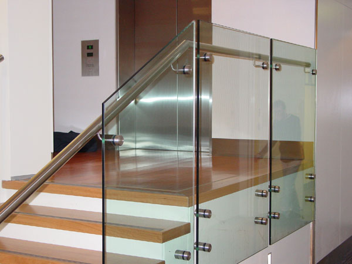

Kaca ialah salah satu material rumah yang pasti selalu ada, utamanya sebagai jendela. Tapi sekarang, penggunaan kaca kian meluas.
Tidak kaca tempered, kaca shower, kanopi kaca, parket kayu jati dan masih banyak lagi. Tidak cuma material kaca sekarang juga terdapat material kayu atau parket lantai kayu jati.
Distributor & Supplier Pintu Kaca di Pematangsiantar
Pintu kaca Pematangsiantar adalah hal yang cukup penting dimiliki oleh sebuah bangunan. Tidak hanya di gedung atau perkantoran, melainkan pntu kaca juga dapat anda aplikasikan pada rumah agar cahaya bisa seketika masuk pada ruangan dan memberikan suasana hangat. Peralatan contoh pintu kaca Pematangsiantar dapat anda dapatkan, tak cuma figur pintu kaca Pematangsiantar konvensional, adalah pintu kaca Pematangsiantar lipat, namun juga pintu kaca Pematangsiantar geser. Energi ragam kaca yang bisa Anda pilih untuk pintu kaca Pematangsiantar Anda seperti kaca tempered yang sedang booming atau kaca non-tempered yang harganya lebih terjangkau. Desain hal yang demikian bisa disesuaikan dengan konsep properti Anda. Dalam hal ini, terdapat beberapa macam kaca dengan kualitas yang terbaik.
Anda dapat memiliki pintu kaca Pematangsiantar unggulan anda sekarang juga dengan mengunjungi dis.or.id. Disana terdapat bermacam-macam macam pintu kaca Pematangsiantar yang dapat anda jadikan opsi.
Dis.or.id siap untuk membikin pintu kaca Pematangsiantar sesuai dengan apa yang Anda inginkan. Dis.or.id memiliki energi yang telah sungguh-sungguh profesional di bidang ini. Untuk budget yang lebih sedikit, Anda bisa memilih jenis kaca non-tempered.
Info Pemesanan Selengkapnya
Google Maps: https://www.google.com/maps/d/u/0/viewer?mid=1Oev1fV01o8gQSuJ72jMMShl0CllevHqY&ll=-7.27380280025364%2C112.65243155000007&z=18
Event: https://www.facebook.com/events/174522916469442/
Portfolio Produk: https://www.facebook.com/1681607345472479/photos/?tab=album&album_id=1712632585703288
Jasa Pemasangan Railing Kaca

Railing kaca menjadi salah satu komponen yang akan membuat tampak amat minimalis. Tak Anda berharap memiliki rumah dengan desain interior minimalis, amat pas ketika komponen tangga dan juga balkon menggunakan railing kaca ini. Lupakan bahan seperti kayu. Pun aksesoris seperti pada pegangan tangga malahan tidak terbuat dari bahan kayu lagi melainkan kaca dan aluminum. Sebaiknya pakai kaca tempered sebab macam kaca ini benar-benar kuat. Namun kaca pecah, kaca tempered tak akan melukai orang yang terkena kaca tempered tersebut lantaran pecahan semacam itu kecil dan lembut, tak berupa kepingan yang runcing.
Anda bisa memilih kaca dengan kualitas terbaik. Anda dapat pertimbangkan untuk memakai kaca tempered. Ada kaca tempered yang kini diminati banyak orang. Kaca ini benar-benar kuat dan juga aman. Dengan demikian, pecahan kaca tempered tidak akan melukai orang yang terkena pecahan. Jika juga dengan railing. Aluminum lazimnya yang dipakai sebagai railing atau pigura. Pastikan juga aluminum ini amat baik dan kuat.
Railing kaca dengan kualitas terbaik dapat anda peroleh di dis.or.id. Tentu dengan harga yang murah melainkan tetap berkelas.
Distributor, Supplier & Jasa Pasang Kanopi Kaca
Banyak macam kaca kanopi yang diterapkan sebagai atap, tidak cuma satu ragam saja. Apabila akan memberikan kesan lapang dikala berada di kamar mandi, mandi dengan shower akan memberikan kesegaran tersendiri dibanding kamar mandi dengan bak mandi. Canopy kaca dengan atap kaca memang sebuah bangunan yang asangat elgan untuk jaman modern seperti kini ini dengan harga yang betul-betul lumayan jika di bandingkan kanopi atap awam. Disinilah letak perbedaan optis yang utama antara akrilik (acrylic) dengan kaca. Jikalau tembus pandang, kaca mengabsorpsi cahaya yang masuk sehingga kian tebal kaca maka semakin sedikit sinar yang dapat melaluinya, karenanya sifat transparannya makin berkurang.|Di samping pintu kaca shower akan membikin kamar mandi kecil kelihatan lebih besar. Atap akrilik atau bisa juga disebut atap kaca acrylic ini banyak ditemukan di sebuah bangunan rumah, seperti ruko, apartemen, cafe, mall, hingga bangunan gedung.
Terdapat banyak kanopi dengan pelbagai ukuran dan ketebalan yang bisa anda pilih pantas dengan yang anda butuhkan. Dis.or.id juga menyediakan jasa pemasangan kanopi kaca yang tentunya dengan bantuan daya professional yang sudah berpengalaman. Sesudah kaca untuk atap kanopi cukup digemari. Disana anda akan mendapat kanopi kaca yang pantas dengan bermacam-macam ketebalan dan harga yang cukup terjangkau.
Distributor & Supplier Kaca Shower
Pintu Kaca Shower pada kamar mandi yakni salah satu alternatif yang bagus untuk desain interior kamar mandi modern. Penyekat ini akan memisahkan antara tempat basah yang dipakai untuk mandi atau meletakan shower dan daerah lain yang merupakan zona kering. Dan sensasi mandi menjadi lebih asik untuk dirasakan. Tentunya banyak kelebihan yang dapat di dapatkan dari penggunaan kaca shower pada kamar mandi di rumah anda. Di samping pintu kaca shower akan membikin kamar mandi kecil kelihatan lebih besar.
Tidak anda sedang mencari kaca shower untuk kamar mandi, anda dapat seketika mengunjungi dis.or.id. Disana anda bisa mendapatkan kaca shower yang berkwalitas dan harga yang juga relatif murah.
Distributor, Supplier & Jasa Pasang Kanopi Kaca

Seiring dengan perkembangan zaman di dunia properti, kini kanopi kaca sudah berkembang cepat mencontoh arsitektur modern. Atap kaca skylight banyak diaplikasikan pada rumah, gedung, kantor, café yang mengusung gaya modern untuk membikin efek sinar yang dramatis pada ruangan bagian bawahnya serta memberi kesan modern pada bangunan. Sifat utama material bahan atap akrilik juga bisa disebut atap acrylic, ini adalah warnanya yang jernih tembus pandang. Ada sebagian alasan kenapa Pintu Kaca Shower banyak diterapkan salah satunya yaitu kaca lebih kelihatan bersih dan rapi dan juga lebih gampang dalam perawatannya. Jikalau tembus pandang, kaca menyerap cahaya yang masuk sehingga semakin tebal kaca karenanya kian sedikit cahaya yang dapat melewatinya, maka sifat transparannya makin berkurang.|Di samping pintu kaca shower akan membuat kamar mandi kecil nampak lebih besar. Pada atap akrilik, penyerapan sinar yang terjadi demikian kecil sehingga meski ketebalannya bertambah, sifat transparannya tidak banyak berubah. Atap akrilik atau bisa juga disebut atap kaca acrylic ini banyak ditemukan di sebuah bangunan rumah, seperti ruko, apartemen, kafe, mall, hingga bangunan gedung.
Terdapat banyak kanopi dengan pelbagai ukuran dan ketebalan yang dapat anda pilih pantas dengan yang anda butuhkan. Dis.or.id juga menyediakan jasa pemasangan kanopi kaca yang tentunya dengan bantuan tenaga professional yang sudah berpengalaman. Banyak bangunan seperti gedung perkantoran, perumahan, ruko dan apartement yang mengaplikasikan kanopi kaca tempered. Setelah kaca untuk atap kanopi cukup digemari. Tak anda sedang mencari kanopi kaca, anda dapat seketika mengunjungi dis.or.id. Disana anda akan mendapatkan kanopi kaca yang cocok dengan beragam ketebalan dan harga yang cukup terjangkau.
Jasa Maintenance Kaca
Jasa maintenance kaca menawarkan pelayanan perawatan bahan bangunan yang terbuat dari kaca. Kaca sungguh-sungguh memerlukan perawatan karena setiap hari terkena sinar sang surya atau juga hujan. Kaca menjadi kusam. Selain cuma membersihkan kaca, jasa maintenance kaca juga bisa menjalankan koreksi.
Dengan memakai bahan pembersih yang akan membuat kaca nampak bersih seperti pertama kali dipasang. Lebih dari itu, Sekiranya ahli yang dimilik oleh dis.or.id juga dapat membetulkan kaca yang rusak.
Dengan tenaga spesialis yang siap untuk melakukan pembersihan dan bahan pembersih yang di miliki, kaca gedung perkantoran Anda akan terlihat seperti baru lagi. Dis.or.id juga sudah mempersiapkan dengan beraneka alat yang dapat dipakai untuk menjangkau semua sudut gedung, sekalipun gedung Anda amat tinggi. Dengan sudah memberikan training terhadap daya pakar sehingga mereka telah bisa melaksanakan profesi mereka dengan sungguh-sungguh baik. Selain hanya dalam hal membersihkan kaca, mereka juga cakap menjalankan koreksi serta penggantian kaca yang mengalami kerusakan.
Jasa Pemasangan Kaca Tempered
Tak anda mebutuhkan jasa maintenance kaca, anda bisa mengunjungi dis.or.id. Semakin banyak orang yang berharap mengaplikasikan kaca ini. Untuk bagian perkantoran, pintu, partisi, serta balkon biasanya terbuat dari kaca tempered. Sementara itu, untuk rumah hunian, komponen dari rumah seperti kamar mandi serta kanopi biasanya terbuat dari kaca tempered. Selain sembarang tukang juga bisa menjalankan pelaksanaan pemotongan ini. Namun dahulu cuma gedung perkantoran atau pusat perbelanjaan modern saja yang menggunakan macam kaca ini, sekarang rumah hunian juga sudah dibangun dengan kaca tempered. Selain ini tidak lain karena kian banyak orang yang memahami mutu serta keunggulan dari kaca tempered ini.
Sementara itu, untuk hunian, kanopi dan kamar mandi menjadi komponen yang paling menarik jikalau dihasilkan dari bahan kaca tempered. Disana anda dapat memanfaatkan jasa pemasangan kaca tempered untuk seluruh ragam bidang maupun bangunan. Tak dikala ini anda sedang berharap membangun suatu bangunan atau gedung, anda dapat memanfaatkan kaca tempered untuk diterapkan lantas ke semua jenis bidang. Anda dapat lantas mengunjungi dis.or.id untuk mendapatkan berita mengenai jasa pemasangan kaca tempered, menerapkan kaca tempered dan pastinya hasil yang diberikan malahan akan cocok dengan apa yang Anda inginkan.
Jual Kaca Cermin
Kaca cermin dapat diciptakan aksesoris untuk mempercantik interior rumah Anda. Lihat saja banyak produk cermin yang dihasilkan dengan desain unik dan menarik. Banyak produsen kaca cermin yang membikin dengan desain yang berbeda. Kini, cermin tidak hanya berbentuk persegi atau persegi panjang saja. Jadi, Anda mempunyai banyak opsi untuk memutuskan cermin yang Anda pilih benar-benar bisa mempercantik interior rumah Anda. Sekarang perlu dipandang juga ialah apakah Anda berharap mempunyai kaca cermin desain minimalis atau yang elegan. Cermin minimalis memiliki siku.
Sekiranya sebagai bahan untuk pintu kaca, kaca cermin ini juga masih digunakan sebagai aksesoris cermin. Malahan, Anda dapat gunakan kaca cermin ini sekalian sebagai material utama, seperti sebagai pintu lemari di kamar tidur Anda. Atau barangkali Anda mengharapkan kaca cermin yang lantas bisa ditempelkan pada bagian furniture tertentu seperti pintu lemari. Tak model lemari baju di mana komponen pintunya terbuat dari kaca cermin. Cermin ini umumnya ditempatkan di kamar mandi, di atas wastafel, atau di kamar tidur. Disana anda dapat mendapatkan kaca cermin yang pantas dengan harapan anda.
Distributor & Supplier Pintu Lipat Kaca
Sebab keunggulan yang dimiliki hal yang demikian, Anda pasti berdaya upaya harga pintu kaca lipat frameless ini mahal. Jikalau ruang makan bersebelahan dengan taman, Anda dapat sekat dengan pintu lipat kaca ini. Apalagi apabila taman Anda terbuka sehingga pencahayaan natural masuk. Maka, cahaya itupun akan masuk ke dalam ruang makan sebab penyekatnya terbuat dari pintu kaca transparan.
Ukuran kaca menjadi faktor penentu berapa harga pintu kaca lipat yang Anda inginkan. Pastikan Anda memilih kaca tempered kualitas terbaik supaya pintu lipat yang Anda pesan dapat diterapkan dalam kurun waktu yang betul-betul lama. Jadi, bukan cuma pintu saja yang berupa kaca, tetapi juga seluruh sekat ruangan.
Jasa Pemasangan Kubikel Toilet

Kubikel kamar kecil mempunyai desain yang mewah dan elegan sehingga siapa saja yang melihatnya pasti akan berminat, tidak cuma itu kubikel kaca memberikan kesan bersih, rapid an tertata.
Dengan menerapkan WC kubikel tentnya toilet yang anda miliki Menonjol lebih elegan dan mewan jauh dari kesan kumal. Dengan menggunakan toilet kubikel pada hunian ataupun gedung yang anda miliki tentunya banyak kelebihan yang anda daptkan yakni harga kubikel yang lebih murah diperbandingkan dengan bahan konvensionel lainnya. Kalau anda berminat untuk mempunyai kubikel WC, anda dapat lantas mengunjungi dis.or.id.
Seandainya anda berharap memiliki kubikel kamar mandi ini, anda dapat mengunjungi situs dis.or.id.
Karena disana terdapat beragam ukuran kubikel kamar kecil yang dapat anda jadikan alternatif untuk hunian atau temap usaha anda. Jikalau anda dikala ini sedang memerlukan kaca shower untuk kamar mandi, seketika saja kunjungi dis.or.id untuk melakukakn pengorderan ataupun menanyakan rinci harga dari kaca shower.
Distributor & Supplier Partisi Kaca
Partisi kaca sekarang cuma ditemui di perkantoran modern atau sentra perbelanjaan. Banyak rumah hunian yang sekatnya terbuat dari kaca. Belum lagi pemasangan yang murah. Tarif ini dijalankan menghemat tarif bangunan. Tak sekali partisi ini lebih hemat ketimbang pembatas berupa tembok yang terbuat dari batu bata, pasir, dan juga semen. Alasan yang ketiga, partisi kaca ini tak menghabiskan space. Dengan harga yang sungguh-sungguh pantas dengan kantong anda, Segera daripartisi kaca ini tidak perlu diragukan lagi. Beberapa kunjungi dis.or.id kini juga. Anda memakai partisi kaca ini sebagai penyekat beberapa ruangan seperti kamar mandi dalam, taman dalam ruangan, ruangan bermain di dalam rumah, dan lain sebagainya. itu, tentukan juga macam kaca yang mau diaplikasikan apakah transparan, semi transparan, atau kaca cermin yang membuat ruangan betul-betul privat. Dis.or.id menjual pelbagai macam kaca penyekat yang kualitasnya terbaik.